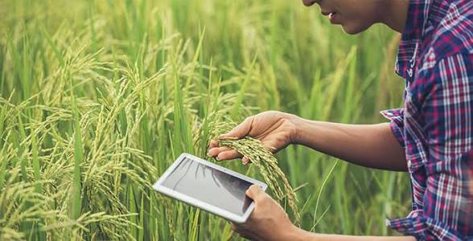
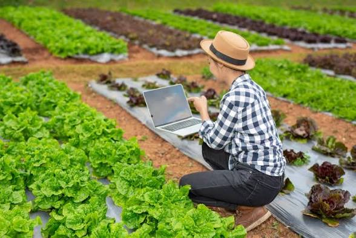
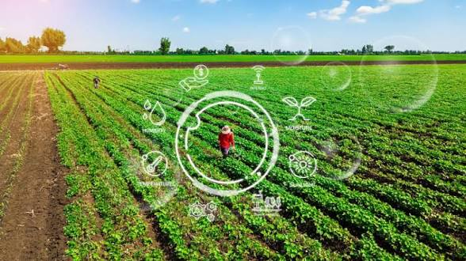

OptiCrop helps farmers and agricultural stakeholders discover the most suitable crops based on soil nutrients and environmental conditions using advanced machine learning. Grow smarter, harvest better. 🌾
Four reasons smart farmers trust data over guesswork
Get accurate crop recommendations using advanced machine learning algorithms trained on real soil and climate data.

Improve yield and reduce crop failure with data-driven insights tailored to your exact field conditions.

Optimize the use of water, fertilizers, and other resources so nothing goes to waste in your fields.

Promote sustainable agriculture practices and protect the environment for generations to come.